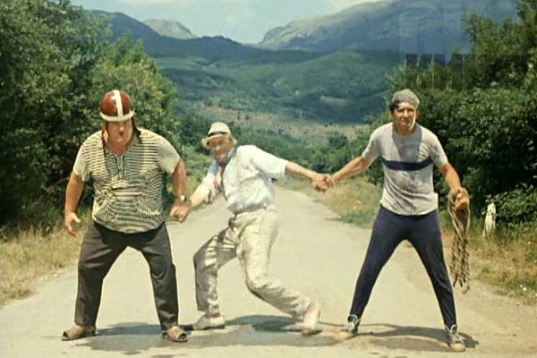
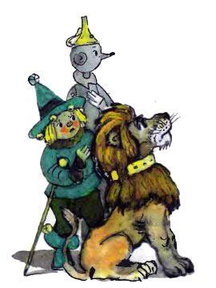
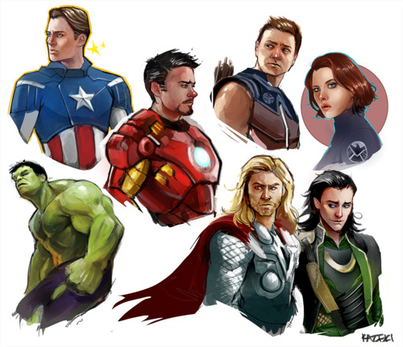

Модульность и фреймворкозависимость
Владимир Голдобин, XIAG
Как мы дошли до жизни такой
- Толстые контроллеры и клиенты
- Сеньоры программисты
Модульность на уровне обработки запроса
- fake subrequests
- real (http, rpc) subrequests (накладные расходы, масштабируемость)
- ESI (Edge Side Includes) (внешнее кеширование)
- MQ (асинхронность, разгрузка, надежность)
- Client side (ajax)
На уровне логики (картинки)
- listener
- middleware
- ioc (aop, xml)



Фреймворк помогает уменьшать зависимости
- отделяться от реального http запроса/ответа/сессии
- структурировать фронт-контроллеры
- отделять вид, модели и контроллеры
- отделять бд от модели данных
- выкашивать любую логику из вида и возвращать ее обратно
- абстракция формы, пейджера
- ...
хороший ф
- который не замечаешь.
- набор (опциональных) практик
- нужно только настроить
- решает утилитарные задачи
- не связан с бизнес-логикой приложения
нормальный ф
- диктует правила как вообще работать
- каркас
плохой ф
- фреймворк - основная часть приложения
- 1m1v1c (на любой реквест 1 модель 1 вид 1 контроллер)
- жирные контроллеры
- роутинг сильно завязан на имена файлов/классов/методов
- модели/виды/... наследуются от общего предка
- кодогенераторы или необходимость в них (если есть CRUD,..)
- общие фичи приложения сразу же добавляются в фреймворк
Выводы
- использовать фреймворк умеючи
- писать модульный код, дробить задачи
Fork me on Github